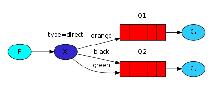

RabbitMQ是实现了高级消息队列协议（AMQP）的开源消息代理软件（亦称面向消息的中间件）
AMQP（Advanced Message Queue Protocol 高级消息队列协议）
AMQP 连接通常是长连接
使用 TCP 提供可靠投递的应用层协议
使用认证机制并且提供 TLS（SSL）保护
Rabbitmq组件
a. 生产者（Publisher/Producer）：生产者会将消息发送给交换机。为了使交换机正确的将消息路由给队列，发布消息时需指定消息的路由键（routing key）
b.消息服务器（Broker）：接收消息，推送消息。
c.虚拟主机（Virtual Host）：类似于namespace概念，可用于实现隔离不同用户的权限。
d.交换机（Exchange）：交换机负责接收消息并按照routing key将消息路由给队列。路由交换机只做路由，不会存储数据。
e.绑定（Binding）：交换机和队列之间通过路由键（routing key）相互绑定起来，并根据路由键将消息路由到对应队列。
f.队列（Queue）。
g.连接（Connection）：消费者/生产者与broker之间的连接。
h.通道（Channel）：如果消费者每一次从代理中取消息都建立一次连接的话，在消息量大的情况下建立多个连接将会有巨大的开销。 Channel是在Connection内部建立的逻辑连接。channel之间是完全隔离的。Channel作为轻量级的Connection极大减少了操作系统建立TCP connection的开销。
i.消费者（Consumer）。
5种工作模式
1.simple 模式
2.工作队列 模式
工作队列模式多个消费者属于竞争的关系。一个消息只会被其中一个消费者消费。默认情况下broker会将消息平均地分发到各个消费者。
3.发布订阅模式

广播模式,会忽略掉Exchange和queue之间的binding。消息会路由到所有绑定该Exchange的所有queue。
4.路由模式
直连模式,消息的routing key和binding需要完全相等才会将消息路由到队列
5.主题模式
模糊匹配。消息的routing key满足binding的模式就可以路由到队列。 '#'可以匹配0到多个字符串，'*'号匹配一个。如上图，routing key为"lazy"、"lazy.a.b"、"a.x.rabbit"都可以路由到Ｑ2； "lazy.orange.x"可以同时路由到Q1和Q2；"b.orange"不匹配任何binding，会被丢弃
生产者只需要知道该往哪个Exchange发送消息，路由工作由Exchange负责。 由于Exchange不会保存数据，发布订阅\路由\主题模式必须先保证有queue被绑定到该Exchange，否则消息会被丢掉 simple\工作队列模式 生产者不用绑定Exchange，只需要指定消息需要推送到哪个退列，会有个默认Exchange转发消息
TTL队列
1.队列的过期时间: 队列中每个消息的过期时间都是6s，并不是指这个队列只可以存活6s。例如，消息第1秒存入queue，消息B第3秒存入queue，那么Ａ会在第7秒过期，Ｂ在第9秒过期
2.队列中的每个消息都可以设置不同的过期时间:由于队列的先入先出的特性，消息只有在真正被消费时才会判断是否过期。 例如，如果队尾消息Ａ的过期时间为20s，倒数第二个消息Ｂ的过期时间为2s，那么Ｂ的真正的过期时间为20s，因为Ｂ要等待Ａ
死信队列 (DXL)
被队列丢掉的消息就是死信,如过期、队列满了
ttl + dxl 实现延时队列
消息的幂等性
所谓的幂等性其实就是保证同一条消息不会重复或者重复消费了也不会对系统数据造成异常
消费者在消费完成一条消息之后会向MQ回复一个ACK（可以配置自动ACK或者手动ACK） 来告诉MQ这条消息已经消费了。 假如当消费者消费完数据后，准备回执ACK时，系统挂掉了，MQ是不知道该条消息已经被消费了。 所以重启之后MQ会再次发送该条消息，导致消息被重复消费，如果此时没有做幂等性处理，可能就会导致数据错误等问题
解决方案：
1.消费数据为了单纯的写入数据库，可以先根据主键查询数据是否已经存在，如果已经存在了就没必要插入了。 或者直接插入也没问题，因为可以利用主键的唯一性来保证数据不会重复插入，重复插入只会报错，但不会出现脏数据
2.消费数据只是为了缓存到redis当中，这种情况就是直接往redis中set value了，天然的幂等性。
3.针对复杂的业务情况，可以在生产消息的时候给每个消息加一个全局唯一ID， 消费者消费消息时根据这个ID去redis当中查询之前是否消费过。 如果没有消费过，就进行消费并将这个消息的ID写入到redis当中。如果已经消费过了，就无需再次消费了。
消息的可靠性
消息丢失的3种情况：
1. 生产者弄丢了消息: 生产者在将数据发送到MQ的时候，可能由于网络等原因造成消息投递失败
2. MQ自身弄丢了消息: 未开启RabbitMQ的持久化，数据存储于内存，服务挂掉后队列数据丢失, 开启了RabbitMQ持久化，消息写入后会持久化到磁盘，但是在落盘的时候挂掉了，不过这种概率很小
3. 消费者弄丢了消息: 消费者刚接收到消息还没处理完成，结果消费者挂掉了…
解决方案：
1.生产者弄丢了消息
1.1.生产者在发送数据之前开启RabbitMQ的事务 采用该种方法由于事务机制，会导致吞吐量下降，太消耗性能。
1.2.开启confirm模式 事务机制和 confirm机制最大的不同在于，事务机制是同步的， 你提交一个事务之后会阻塞在那儿，但是 confirm机制是异步的，你发送个消息之后就可以发送下一个消息， RabbitMQ 接收了之后会异步回调confirm接口通知你这个消息接收到了。 一般在生产者这块避免数据丢失，建议使用 confirm 机制
2. MQ自身弄丢了消息
创建queue时设置为持久化队列，这样可以保证RabbitMQ持久化queue的元数据，此时还是不会持久化queue里的数据, 发送消息时将消息的deliveryMode设置为持久化，此时queue中的消息才会持久化到磁盘。
3. 消费者弄丢了消息
关闭自动ACK，使用手动ACK
消息的顺序性
将原来的一个queue拆分成多个queue，每个queue都有一个自己的consumer。 该种方案的核心是生产者在投递消息的时候根据业务数据关键值（例如订单ID哈希值对订单队列数取模） 来将需要保证先后顺序的同一类数据（同一个订单的数据） 发送到同一个queue当中